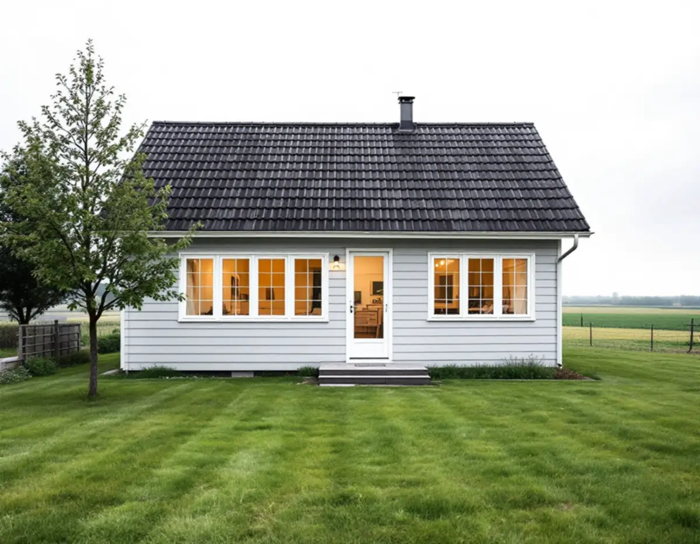
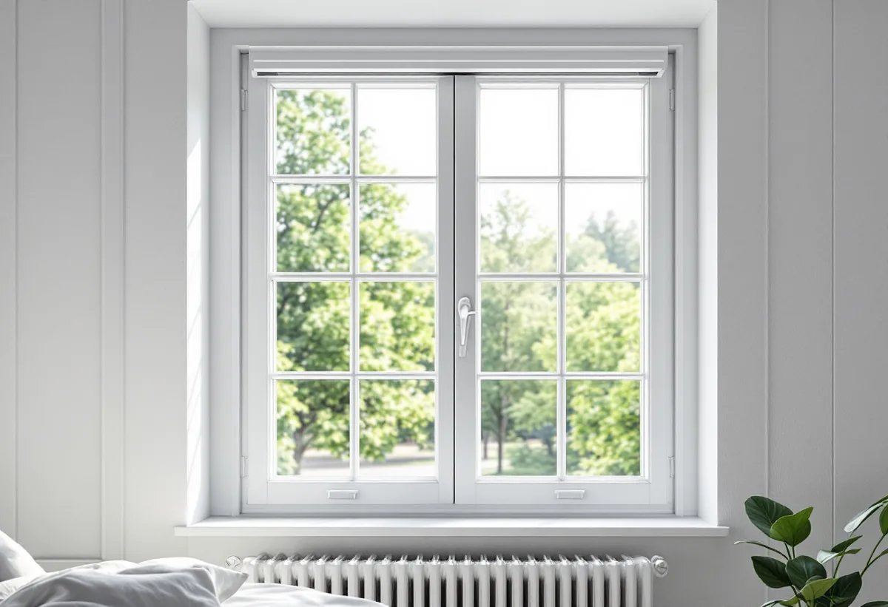

Före besöket
Du tar reda på hos Swedavia om huset ingår i ett bullerisoleringsområde.
Arlanda ligger i Sigtuna kommun, och för många hus här är det fönstren som avgör hur mycket av flyget som hörs inomhus. Innan nya fönster beställs är det bra att veta vad Swedavias bullervillkor innebär. Geal Entreprenad AB byter och renoverar fönster i Märsta, Sigtuna stad, Rosersberg och resten av kommunen och lämnar ett skriftligt kostnadsförslag efter ett gratis platsbesök.

Arlandas miljötillstånd togs i anspråk 2016, och i villkor 23 beskrivs Swedavias skyldighet att vidta bullerskyddsåtgärder i bostadsbyggnader. Enligt Swedavia avses både permanentbostäder och fritidsbostäder. Krav på bullerskydd beslutades första gången av Koncessionsnämnden 1993, när bana 3 byggdes. Nya krav kom 1998 och 2003, och bullerisoleringsprogram genomfördes kring flygplatsen fram till 2013.
Vilka bostäder som kan bli aktuella styrs av tre gränskurvor: en flygbullernivå, FBN, på 55 dB(A), en maximal ljudnivå nattetid på 70 dB(A) och en maximal ljudnivå dag- och kvällstid på 80 dB(A). Nattnivån ska överskridas minst tre gånger per natt under minst 150 nätter, och dagnivån regelbundet. Det räcker att huset omfattas av en av kurvorna.
Målet inomhus är en FBN på 30 dB(A) och högst 45 dB(A) som maximal nivå nattetid. I FBN får varje start eller landning kvällstid ett tillägg på 5 dB(A) och nattetid på 10 dB(A). Områdena beräknas för 250 000 flygrörelser per år och räknas om varje år.

Swedavia anlitar oberoende akustiker som inventerar husen, för det mesta genom ett platsbesök inomhus. I områden med likadana hus kan ett referenshus användas för flera bostäder. Beräkningen följer standarden SS-EN 12354-3 och tar med fönster, friskluftsventiler, väggar och tak.
Vid genomgången bedöms fönsterstorlek, fönstertyp, glastjocklek, tätningslisternas skick, väggtyp, takkonstruktion och rummens storlek. Eftersom ljudnivån kan skilja sig mellan rummen kan vissa rum behöva åtgärdas och andra inte. Behovet blir ett åtgärdsförslag som bifogas ett avtal mellan Swedavia och fastighetsägaren.
Åtgärderna kan enligt Swedavia gå från tätning av lister och byte av glasrutor i befintliga fönster till helt nya fönster. Kostnaderna ska vara rimliga med hänsyn till bostadens standard och värde, och tidigare åtgärder och nedlagda kostnader på fastigheten räknas in.
Planerar du ett eget fönsterbyte är det klokt att först fråga Swedavia om fastigheten ligger inom ett bullerisoleringsområde eller redan har åtgärdats. Har huset fått bullerisolering tidigare bör det nya fönstret inte vara sämre mot ljud än det som sitter där i dag. Ett fönster väljs då både efter U-värde och efter hur mycket ljud det dämpar.
Boverket påpekar att olika glas och glaskombinationer ger olika bullerdämpning, solavskärmning och dagsljus. Eftersom Swedavias beräkning även tar med friskluftsventiler spelar tilluften roll: en spaltventil i bågen eller karmen är en öppning, och placeringen påverkar hur mycket som hörs i sovrummet.
Tätningen mellan karm och vägg och listerna mellan båge och karm påverkar både ljud och värme. Vi drevar och tätar varje fönster och kontrollerar att bågarna sluter. Ska taket eller vindsbjälklaget också ses över, läs om takrenovering i Sigtuna.
Sigtuna kommun skriver att utformningen av fönster, liksom fasader, tak och entréer, är viktig för en byggnads uttryck, och att ursprungliga material och detaljer bör bevaras eller ersättas med samma material om de måste bytas. För Sigtuna stad finns en bevarande- och förnyelseplan och för dalgången mellan Odensala och Hova särskilda riktlinjer.
Är en byggnad eller ett område särskilt värdefullt kan lov krävas även för en fasadändring som annars är lovfri. Är du osäker kan du skicka in adressen, en beskrivning av vad du vill göra och foton på fastigheten från alla väderstreck, så gör kommunen en bedömning. Även hus som inte är utpekade i något program kan enligt kommunen kräva särskild hänsyn.
Du tar reda på hos Swedavia om huset ingår i ett bullerisoleringsområde.
Vi går igenom fönster, glas, lister och ventiler rum för rum.
Ljud- och energiegenskaper vägs mot husets läge och karaktär.
Fönster, glas, ventiler och montage specificeras i ett skriftligt förslag.
Fönstren monteras med noggrann drevning och tätning runt hela karmen.
Vi kontrollerar att bågarna sluter tätt och att ventilerna sitter rätt.
Skatteverket godkänner rotavdrag för att reparera eller byta ut fönster i ett småhus och för att montera bullerglas och isolerglas. Avdraget är 30 procent av arbetskostnaden, högst 50 000 kr per person och år och högst 75 000 kr sammanlagt med rutavdrag.
Material, resor och utrustning ger inget avdrag. Vi gör avdraget direkt på fakturan.
Antal fönster och rum, vilken ljudklass och vilket energiglas som väljs, om befintliga bågar kan få nytt glas i stället för att bytas, om friskluftsventiler ska flyttas eller bytas och hur mycket foder och bleck som ska göras om. Kostnadsförslaget kommer skriftligt efter ett gratis besök.
Byta eller renovera fönster.
Fönsterbyte i Stockholm →Takbyte, takbesiktning och plåtarbeten.
Takläggare i Sigtuna →Sigtuna stad, Märsta och Arlanda.
Takrenovering i Sigtuna →Anmälan, fläkt och dusch i stället för badkar.
Badrumsrenovering i Sigtuna →Nytt hus, gästhus och större tomt.
Byggföretag i Sigtuna →Gatufasad, gårdsfasad och uthus i stadskärnan.
Fasadmålning i Sigtuna →Puts i stadskärnan, panel i dalgången.
Fasadrenovering i Sigtuna →Bevarandeplanen, gammalt glas och fönsterkulörer.
Fönsterrenovering i Sigtuna →Golv på platta, fuktmätning och radon.
Golvläggare i Sigtuna →Stadskärnan, Märsta och Rosersberg.
Målare i Sigtuna →Plåttak, rännor och beslag i Sigtuna.
Plåtslagare i Sigtuna →Staket, dörrar och gårdshus i stad och dalgång.
Snickare i Sigtuna →Ny tapet i äldre trähus.
Tapetsering i Sigtuna →